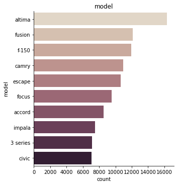
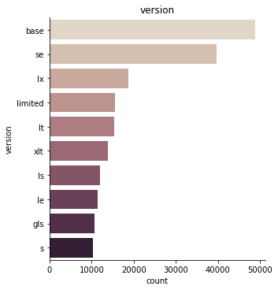
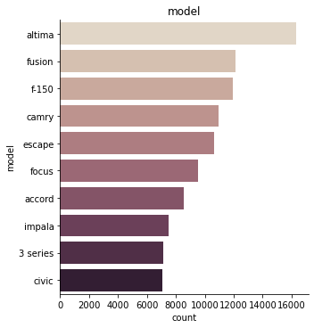
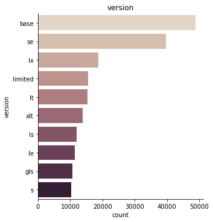
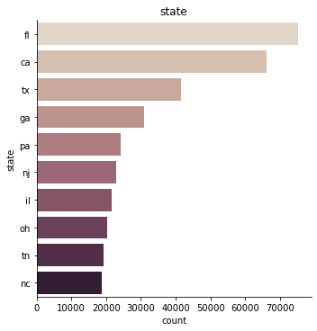
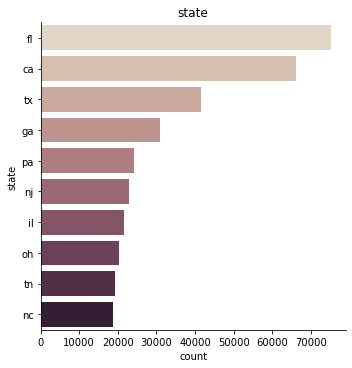
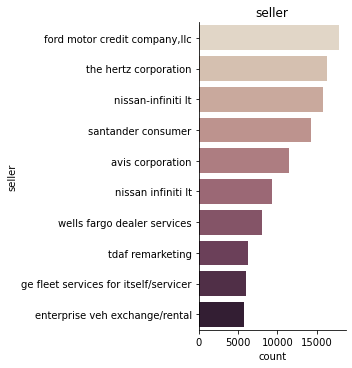
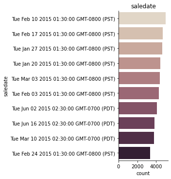
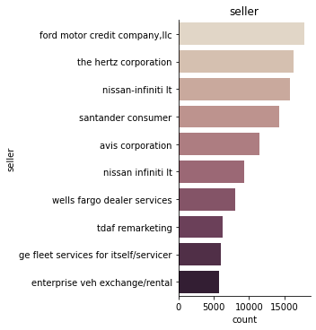
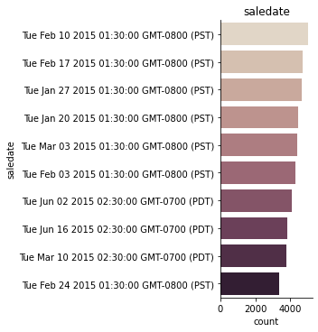

Data analysis¶
Here you can find the exploratory data analysis (EDA) to understand more about the “used car prices”-dataset.¶
Load packages¶
import pandas as pd
import numpy as np
%matplotlib inline
import seaborn as sns
import matplotlib.pyplot as plt
Import dataset¶
# import dataset and save it as df
df = pd.read_csv("car_prices.csv", on_bad_lines="skip")
# on_bad_lines="skip" otherwise it caused a problem
# show first two rows to check if the dataset is imported correctly
df.head(2)
| year | make | model | trim | body | transmission | vin | state | condition | odometer | color | interior | seller | mmr | sellingprice | saledate | |
|---|---|---|---|---|---|---|---|---|---|---|---|---|---|---|---|---|
| 0 | 2015 | Kia | Sorento | LX | SUV | automatic | 5xyktca69fg566472 | ca | 5.0 | 16639.0 | white | black | kia motors america, inc | 20500 | 21500 | Tue Dec 16 2014 12:30:00 GMT-0800 (PST) |
| 1 | 2015 | Kia | Sorento | LX | SUV | automatic | 5xyktca69fg561319 | ca | 5.0 | 9393.0 | white | beige | kia motors america, inc | 20800 | 21500 | Tue Dec 16 2014 12:30:00 GMT-0800 (PST) |
year = year the car was put into the dataset
make = brand of the car
model = cars model
trim = cars version
body = cars type
transmission = cars drivetrain
vin = code
state = state where the car was sold
condition = condition of the car 0.0 - 5.0
odometer = miles of the car
color = cars color
interior = interior color
seller = seller
mmr = ratingprice
sellingprice = sellingprice
saledate = date of sale
# print how many observations and columns the dataset exists of
print(f"We have {len(df.index):,} observations and {len(df.columns)} columns in our dataset.")
We have 558,811 observations and 16 columns in our dataset.
# overview
df.info()
<class 'pandas.core.frame.DataFrame'>
RangeIndex: 558811 entries, 0 to 558810
Data columns (total 16 columns):
# Column Non-Null Count Dtype
--- ------ -------------- -----
0 year 558811 non-null int64
1 make 548510 non-null object
2 model 548412 non-null object
3 trim 548160 non-null object
4 body 545616 non-null object
5 transmission 493458 non-null object
6 vin 558811 non-null object
7 state 558811 non-null object
8 condition 547017 non-null float64
9 odometer 558717 non-null float64
10 color 558062 non-null object
11 interior 558062 non-null object
12 seller 558811 non-null object
13 mmr 558811 non-null int64
14 sellingprice 558811 non-null int64
15 saledate 558811 non-null object
dtypes: float64(2), int64(3), object(11)
memory usage: 68.2+ MB
# print the names of all 16 coulmns
df.columns
Index(['year', 'make', 'model', 'trim', 'body', 'transmission', 'vin', 'state',
'condition', 'odometer', 'color', 'interior', 'seller', 'mmr',
'sellingprice', 'saledate'],
dtype='object')
# print datatype of the variables
df.dtypes
year int64
make object
model object
trim object
body object
transmission object
vin object
state object
condition float64
odometer float64
color object
interior object
seller object
mmr int64
sellingprice int64
saledate object
dtype: object
# print missing values
df.isna().sum()
# in transmission are relatively many missing values
year 0
make 10301
model 10399
trim 10651
body 13195
transmission 65353
vin 0
state 0
condition 11794
odometer 94
color 749
interior 749
seller 0
mmr 0
sellingprice 0
saledate 0
dtype: int64
# drop missing vales (dataset is still big enough)
df = df.dropna()
# show missing values (missing values - if present - will be displayed in yellow )
sns.heatmap(df.isnull(), yticklabels=False, cbar=False, cmap='viridis');
# show if there are still missing values
df.isna().sum()
year 0
make 0
model 0
trim 0
body 0
transmission 0
vin 0
state 0
condition 0
odometer 0
color 0
interior 0
seller 0
mmr 0
sellingprice 0
saledate 0
dtype: int64
# rename colums for better understanding (as described above)
df = df.rename(columns={
"make" : "brand",
"body" : "type",
"trim" : "version",
"transmission" : "drivetrain",
"vin" : "code",
"odometer" : "miles",
"mmr" : "ratingprice"}
)
df.info()
<class 'pandas.core.frame.DataFrame'>
Int64Index: 472336 entries, 0 to 558810
Data columns (total 16 columns):
# Column Non-Null Count Dtype
--- ------ -------------- -----
0 year 472336 non-null int64
1 brand 472336 non-null object
2 model 472336 non-null object
3 version 472336 non-null object
4 type 472336 non-null object
5 drivetrain 472336 non-null object
6 code 472336 non-null object
7 state 472336 non-null object
8 condition 472336 non-null float64
9 miles 472336 non-null float64
10 color 472336 non-null object
11 interior 472336 non-null object
12 seller 472336 non-null object
13 ratingprice 472336 non-null int64
14 sellingprice 472336 non-null int64
15 saledate 472336 non-null object
dtypes: float64(2), int64(3), object(11)
memory usage: 61.3+ MB
# transform into lowercase
df["brand"] = df["brand"].str.lower()
df["model"] = df["model"].str.lower()
df["type"] = df["type"].str.lower()
df["drivetrain"] = df["drivetrain"].str.lower()
df["state"] = df["state"].str.lower()
df["version"] = df["version"].str.lower()
df["color"] = df["color"].str.lower()
df["interior"] = df["interior"].str.lower()
df["seller"] = df["seller"].str.lower()
df.head(2)
| year | brand | model | version | type | drivetrain | code | state | condition | miles | color | interior | seller | ratingprice | sellingprice | saledate | |
|---|---|---|---|---|---|---|---|---|---|---|---|---|---|---|---|---|
| 0 | 2015 | kia | sorento | lx | suv | automatic | 5xyktca69fg566472 | ca | 5.0 | 16639.0 | white | black | kia motors america, inc | 20500 | 21500 | Tue Dec 16 2014 12:30:00 GMT-0800 (PST) |
| 1 | 2015 | kia | sorento | lx | suv | automatic | 5xyktca69fg561319 | ca | 5.0 | 9393.0 | white | beige | kia motors america, inc | 20800 | 21500 | Tue Dec 16 2014 12:30:00 GMT-0800 (PST) |
Categorial or numeric?¶
year = categorial
brand = categorial
model = categorial
version = categorial
type = categorial
drivetrain = categorial
code = categorial
state = categorial
condition = categorial
miles = numeric
color = categorial
interior = categorial
seller = categorial
ratingprice = numeric
sellingprice = numeric
saledate = categorial
# transform into categorial variables
for cat in ["year", "brand", "model", "version", "type", "drivetrain", "code", "state", "condition", "color", "interior", "seller", "saledate"]:
df[cat] = df[cat].astype("category")
df.dtypes
year category
brand category
model category
version category
type category
drivetrain category
code category
state category
condition category
miles float64
color category
interior category
seller category
ratingprice int64
sellingprice int64
saledate category
dtype: object
df.describe(include="category").T
| count | unique | top | freq | |
|---|---|---|---|---|
| year | 472336 | 26 | 2013 | 87474 |
| brand | 472336 | 53 | ford | 81014 |
| model | 472336 | 764 | altima | 16346 |
| version | 472336 | 1488 | base | 48782 |
| type | 472336 | 45 | sedan | 211308 |
| drivetrain | 472336 | 2 | automatic | 455974 |
| code | 472336 | 465779 | 1ftfw1cv5afb30053 | 4 |
| state | 472336 | 34 | fl | 75243 |
| condition | 472336.0 | 41.0 | 1.9 | 36652.0 |
| color | 472336 | 20 | black | 93245 |
| interior | 472336 | 17 | black | 209870 |
| seller | 472336 | 11927 | ford motor credit company,llc | 17756 |
| saledate | 472336 | 3609 | Tue Feb 10 2015 01:30:00 GMT-0800 (PST) | 5004 |
# crating variable list for numeric and categorial variables
# list of all numerical data
list_num = df.select_dtypes(include=[np.number]).columns.tolist()
# list of all categorical data
list_cat = df.select_dtypes(include=['category']).columns.tolist()
print(list_num, list_cat)
['miles', 'ratingprice', 'sellingprice'] ['year', 'brand', 'model', 'version', 'type', 'drivetrain', 'code', 'state', 'condition', 'color', 'interior', 'seller', 'saledate']
Categorical Data¶
sns.catplot(y="brand", kind="count", palette="ch:.25", data=df)
<seaborn.axisgrid.FacetGrid at 0x7fcfaeda9fd0>
# print plots for top 10 of each variable
for i in list_cat:
TOP_10 = df[i].value_counts().iloc[:10].index
g = sns.catplot(y=i,
kind="count",
palette="ch:.25",
data=df,
order = TOP_10)
plt.title(i)
plt.show();
 





 

/opt/anaconda3/lib/python3.7/site-packages/pandas/io/formats/format.py:1429: FutureWarning: Index.ravel returning ndarray is deprecated; in a future version this will return a view on self.
for val, m in zip(values.ravel(), mask.ravel())
/opt/anaconda3/lib/python3.7/site-packages/pandas/io/formats/format.py:1429: FutureWarning: Index.ravel returning ndarray is deprecated; in a future version this will return a view on self.
for val, m in zip(values.ravel(), mask.ravel())


 



# Numercial gruped by categorical
# median
for i in list_cat:
print(df_train.groupby(i).median().round(2).T)
---------------------------------------------------------------------------
NameError Traceback (most recent call last)
/var/folders/9r/ym9jxwt15b70q43zrdvqgmdh0000gn/T/ipykernel_21760/2789516292.py in <module>
2 # median
3 for i in list_cat:
----> 4 print(df_train.groupby(i).median().round(2).T)
NameError: name 'df_train' is not defined
Numerical data¶
# summary of numerical attributes
df.describe().round(2).T
| count | mean | std | min | 25% | 50% | 75% | max | |
|---|---|---|---|---|---|---|---|---|
| miles | 472336.0 | 66701.07 | 51939.18 | 1.0 | 28137.0 | 51084.0 | 96589.0 | 999999.0 |
| ratingprice | 472336.0 | 13837.00 | 9532.13 | 25.0 | 7425.0 | 12300.0 | 18300.0 | 182000.0 |
| sellingprice | 472336.0 | 13690.40 | 9612.96 | 1.0 | 7200.0 | 12200.0 | 18200.0 | 230000.0 |
# histograms
df.hist(figsize=(20, 15));

sns.set_theme(style="ticks", color_codes=True)
sns.pairplot(df);

sns.scatterplot(data=df, x="miles", y="sellingprice")
<AxesSubplot:xlabel='miles', ylabel='sellingprice'>

sns.histplot(data=df, x="ratingprice")
<AxesSubplot:xlabel='ratingprice', ylabel='Count'>
sns.histplot(data=df, x="sellingprice")
<AxesSubplot:xlabel='sellingprice', ylabel='Count'>

Relationships¶
Correlation¶
Detect the relationships between variables
# inspect correlation
print(df.corr())
sns.heatmap(df.corr())
miles ratingprice sellingprice
miles 1.000000 -0.582648 -0.577385
ratingprice -0.582648 1.000000 0.983492
sellingprice -0.577385 0.983492 1.000000
<AxesSubplot:>
Conclusion:¶
ratingprice and sellingprice have a very high correlation, therefore I would remove the column “ratingprice” from the dataset.
code is not necessary, therefore I would remove the column “code” from the dataset.
saledate is also unnecessary, therefore I would remove the column “saledate” from the dataset.
there are almost only automatic cars in “drivetrain” - not sure if I need this column for my model